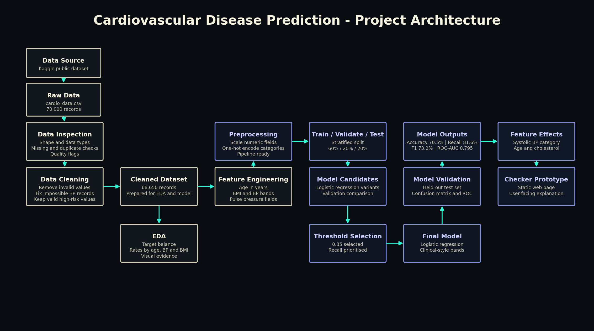
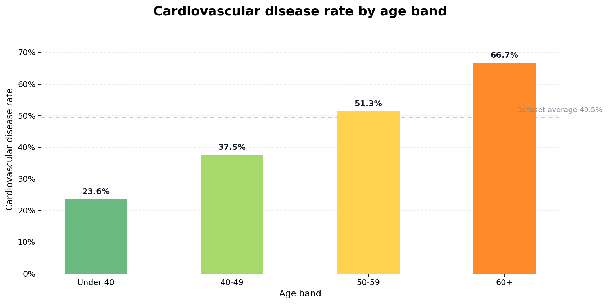
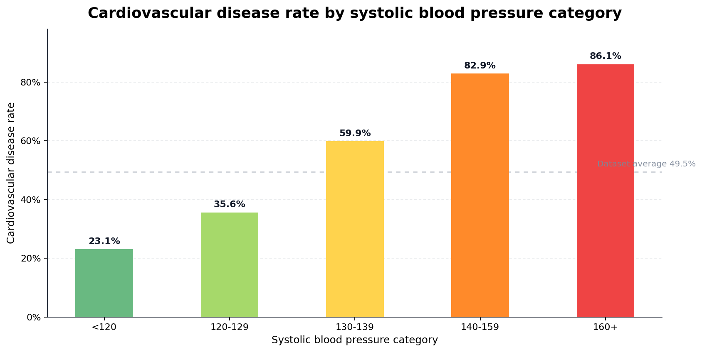
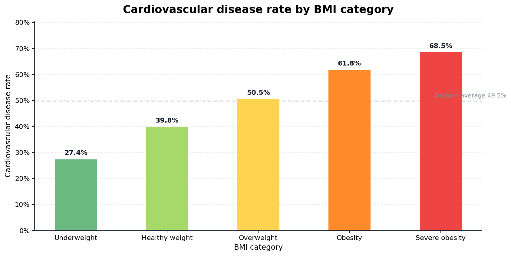
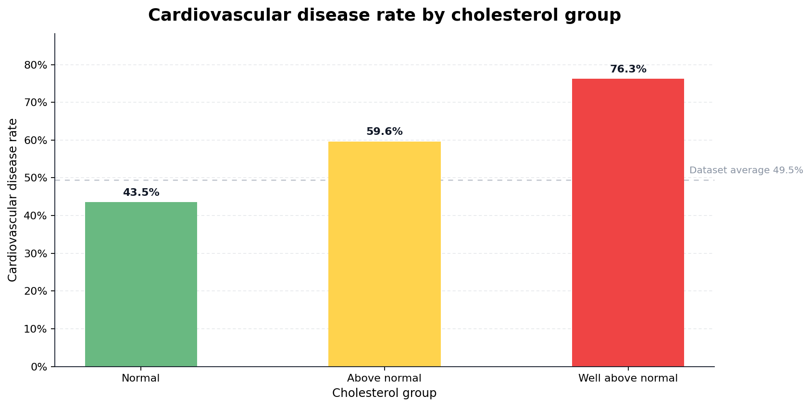
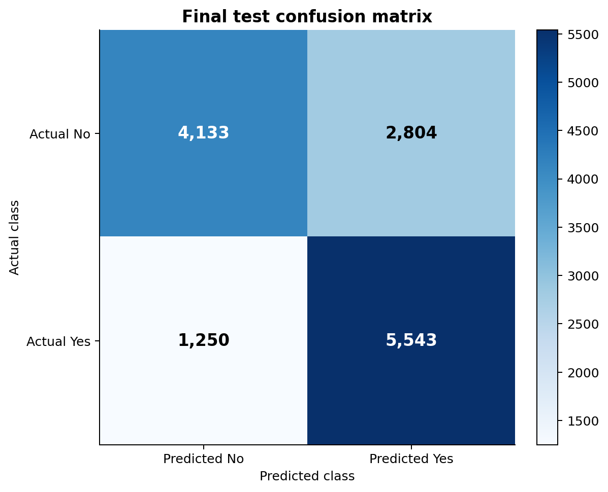
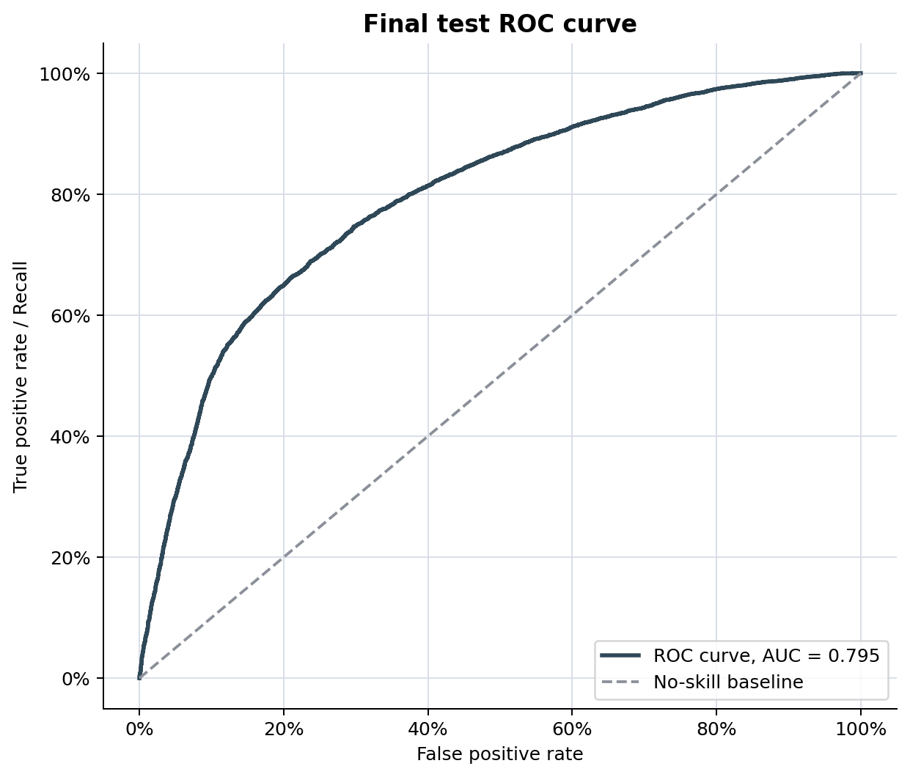
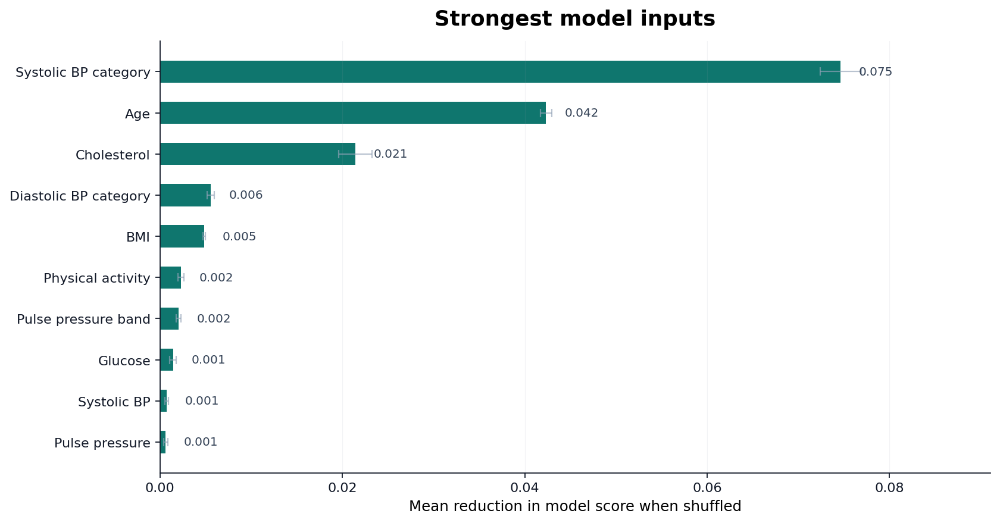
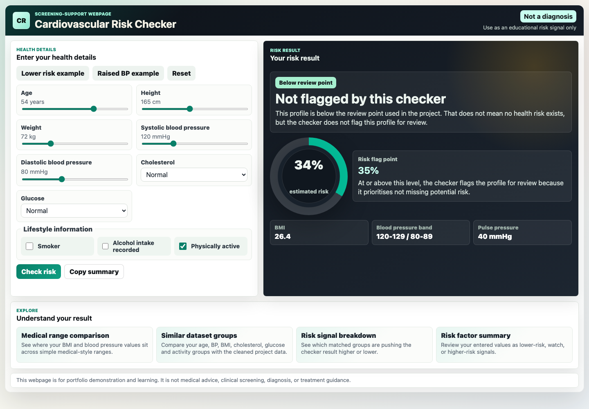

A logistic regression project using routine health indicators to predict whether
cardiovascular disease is recorded in a public dataset. The checker is included as a
communication prototype, while the main project remains the data science workflow.
Public datasetLogistic regressionEDAModel evaluationInteractive prototype
Predicting cardiovascular disease from routine health indicators.
The project investigates whether age, blood pressure, cholesterol, glucose, BMI and
lifestyle indicators can support an interpretable cardiovascular disease prediction
model. The work is designed as a risk awareness and communication exercise, not a
clinical decision system.
The aim is not simply to show a model score. The project follows the full data science
workflow: inspect the public dataset, clean unrealistic values, explore health patterns,
train an interpretable model, evaluate the model using classification metrics, and then
translate the result into a simple checker that a non-technical user can understand.
Data Source
The dataset is the Kaggle Cardiovascular Disease Dataset. It contains 70,000 records
and a binary target showing whether cardiovascular disease is present in the record.
The raw dataset is accessible through Kaggle and linked below. It is not redistributed
from this portfolio because the dataset page lists the licence as unknown.
The architecture diagram shows the route from the public dataset to the final user-facing
prototype. It separates the analytical work from the communication layer, which matters
because the checker is only an output of the model, not the whole project.

Workflow from public data source through cleaning, EDA, modelling, evaluation and checker output.
Data Engineering
The workflow inspected the raw file, removed invalid clinical measurements, converted
age into years, calculated BMI and blood pressure features, and created interpretable
bands for analysis and modelling.
The cleaned dataset retained 68,650 records. The cleaning rules removed impossible
values, such as invalid blood pressure relationships, but kept medically possible
high-risk values so the model did not lose the profiles it needed to learn from.
EDA And Visualisation
EDA examined target balance and cardiovascular disease rates across age, blood pressure,
BMI, cholesterol and glucose groups. The selected visuals below show the clearest
patterns used to shape the modelling and checker explanation.

Older age bands showed higher observed cardiovascular disease rates.

Systolic blood pressure categories showed one of the clearest risk patterns.

BMI was useful for explanation, but it was interpreted alongside other indicators.

Cholesterol groups added a clear clinical pattern to the exploratory analysis.
Observed risk levelLowModerate lowModerateHighVery high
Modelling And Results
Logistic regression was selected because the outcome is binary and the model produces
an interpretable probability. Final test results were 70.5% accuracy, 66.4% precision,
81.6% recall, 73.2% F1 score and 0.795 ROC-AUC.
Recall was prioritised because the prototype is framed as risk awareness support.
In that setting, missing a record that shows cardiovascular disease is treated
as a more serious error than flagging an additional record for caution.
The Kaggle dataset has not been clinically validated for UK populations, so the results
show predictive performance within this dataset rather than clinical proof or a
deployable health risk model.
70.5%Accuracy
66.4%Precision
81.6%Recall
73.2%F1 score
0.795ROC-AUC

The confusion matrix shows the balance between missed positives and false flags.

The ROC curve summarises how well the model ranks risk across thresholds.

Feature effects helped identify which inputs most influenced model performance.
Impact And Communication
The checker translates the model output into a simple user-facing webpage. It shows an
estimated risk percentage, supporting explanations and visual comparisons, while making
clear that it is not medical advice.

The checker turns the model output into a practical communication artefact.
Recommendations
Future work should improve dataset provenance, test calibration, validate performance
on external data, add confidence intervals, review accessibility, and involve
appropriate clinical governance before any real-world health use.